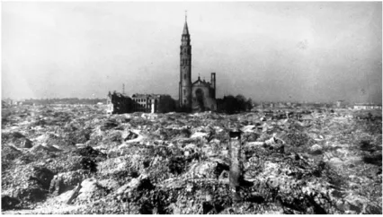

Rzeź Woli.
Dziś krótko, o tym nie można nie mówić !
"Gdy już leżałem, zobaczyłem, iż jest ustawiony na podstawie karabin maszynowy... w odległości ok. 5 - 10 m. Niemcy zaczęli strzelać z karabinu maszynowego i karabinów ręcznych, a także rzucać granaty w tłum leżących ludzi..."
https://www.facebook.com/antoni.pomianowski.7/posts/10225805211134770

Chwała tym, co pamiętają i mówią. Milczenie w tej sprawie to zbrodnia, rozsyłajcie proszę.
Paweł Klimczewski
Jeśli chcesz dostawać mój newsletter zajrzyj tu: https://pawelklimczewski.pl lub wyślij e-maila na adres: newsletter@pawelklimczewski.pl